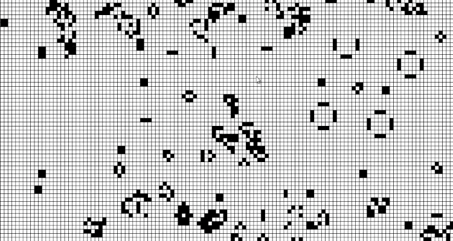

Je m’appelle Baptiste Noisette, étudiant en deuxième année d’école d’ingénieur en informatique. Passionné par le développement et les nouvelles technologies, je suis toujours en quête de nouveaux défis à relever. Curieux, rigoureux et créatif, j’aime concevoir des solutions innovantes tout en continuant à apprendre chaque jour. Actuellement, je suis à la recherche d’une alternance de 3 ans pour consolider mes compétences en développement tout en contribuant à des projets ambitieux au sein d’une équipe stimulante.
Mes projets
Donjon d'Alibaba

Web4All
Décompil. de Super Mario Galaxy 2
Calculatrice en JS
Jeu de la Vie de Conway
